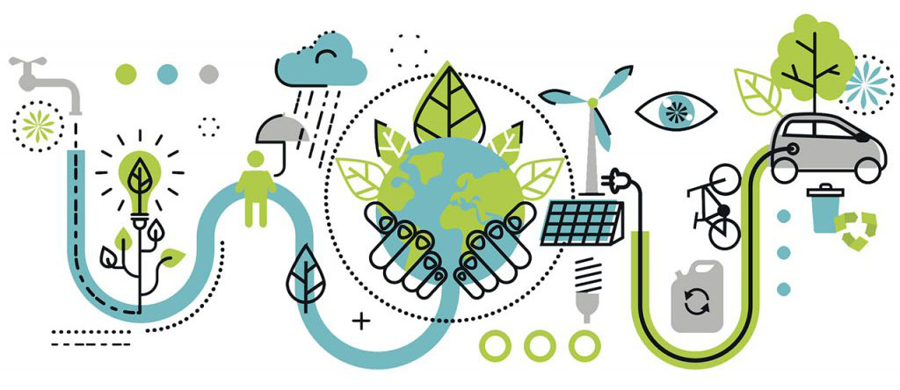

EL CAMBIO
CLIMÁTICO

El cambio climático es, básicamente, la variación global del clima de la tierra debido a causas naturales y a la acción del hombre, que provocan el calentamiento global, es decir, el aumento de la temperatura del planeta.
"La ciencia es clara: si no reducimos rápidamente las emisiones de dióxido de carbono y de otros gases de efecto invernadero, el cambio climático tendrá efectos cada vez más destructivos e irreversibles en la vida en la Tierra". Con estas palabras, el secretario general de la Organización Meteorológica Mundial, Petteri Taalas, alertaba a finales del pasado año al mundo sobre la urgencia de un problema que lleva camino de convertirse en la mayor amenaza a la que se enfrenta la humanidad.
El calor del sol se retiene en la atmósfera por una capa de gases que provocan un efecto invernadero entre los que se encuentran el dióxido de carbono, el óxido nitroso y el metano. Este efecto invernadero es un proceso natural que permite al planeta mantener las condiciones necesarias para la vida.
Por este sistema, la tierra siempre se ha calentado y enfriado en otras ocasiones, pero de forma natural, con ciclos mucho más lentos que necesitaban de millones de años. El problema actual está en que las actividades del ser humano aumentan la emisión de gases de efecto invernadero a la atmósfera-sobre todo de dióxido de carbono (CO2)-, y ésta retiene más calor del necesario, provocando que la temperatura media del planeta aumente.
Acciones Internacionales
Para combatir el cambio climático es indspensable la investigación y la colaboración internacional. El IPCC (Grupo Intergubernamental de Expertos sobre el Cambio Climático), se dedica a evaluar los impactos del ser humano en el clima y propone posibles soluciones.
Aparte, existen acuerdos y tratados globales como las Conferencias de las Partes, un encuentro anual en el que se deciden acciones que los estados miembros pueden tomar para descarbonizar la economía y ayudar a países en desarrollo.
Uno de los ejemplos más claros de colaboración internacional exitosa en favor del medio ambiente es el Protocolo de Montreal. En 1989 entró en vigor este acuerdo que sirvió para erradicar el uso de clorofluorocarbonos para la refrigeración. Gracias a ello, el agujero de la capa de ozono se ha reducido en más de 4 millones de kilómetros cuadrados en los últimos años.
La Convención Marco de las Naciones Unidas sobre el Cambio Climático (CMNUCC), es el principal acuerdo internacional sobre acción por el clima. Fue uno de los tres convenios adoptados en la Cumbre de la Tierra celebrada en Río en 1992. Hasta la fecha ha sido ratificada por 195 países y se inició como medio de colaboración de los países para limitar el aumento de la temperatura mundial y el cambio climático y hacer frente a sus consecuencias.
El Consejo trata dos asuntos relacionados con la CMNUCC: la ratificación de la enmienda de Doha al Protocolo de Kioto, relativa a los compromisos del segundo periodo, que transcurre de 2013 a 2020; y el Acuerdo de París, un nuevo acuerdo mundial firmado en 2015 sobre el cambio climático que incluye a todos los países de la CMNUCC que establece un plan de acción mundial que pone el límite del calentamiento global muy por debajo de 2 ºC.
El Protocolo de Kioto se aprobó por los firmantes de la CMNUCC en 1997 y en él se introducían objetivos jurídicamente vinculantes de reducción de emisiones para los países desarrollados.
El segundo periodo de compromiso del Protocolo de Kioto comenzó en enero de 2013 y finalizará en 2020. Participan en él 38 países desarrollados, incluida la Unión Europea y sus 28 Estados miembros. A este segundo periodo se aplica la enmienda de Doha, con arreglo a la cual los países participantes se han comprometido a reducir las emisiones en un 18 % como mínimo con respecto a los niveles de 1990. La UE se ha comprometido a reducir las emisiones en este periodo en un 20 % por debajo de los niveles de 1990.
En España
Diferentes organismos trabajan en España con un objetivo claro: asegurar el cumplimiento del Acuerdo de París de lucha contra el cambio climático y garantizar la total descarbonización de la economía española en la segunda mitad del siglo XXI.
Partiendo del Ministerio para la Transición Ecológica, los principales organismos implicados son la Oficina Española de Cambio Climático, el Consejo Nacional del Clima, la Comisión de Coordinación de Políticas de Cambio Climático y la Comisión Interministerial para el Cambio Climático.
La Ley de cambio climático y transición energética que prepara el Gobierno es el eje principal de las actuaciones diseñadas. Así, en 2030 el Ejecutivo quiere que las emisiones de gases de efecto invernadero se reduzcan un 20% respecto a 1990, que el sistema eléctrico cuente con un 70 % de generación a partir de energías de origen renovable y mejorar la eficiencia energética.
Para 2050 las emisiones de gases invernadero se deberían reducir un 90% respecto a los niveles de 1990 y el sistema eléctrico se debería basar exclusivamente en fuentes renovables.
El Gobierno impedirá en 2040 la matriculación y venta en España de turismos y vehículos comerciales ligeros con emisiones directas de dióxido de carbono, es decir, todos los diésel, gasolina, híbridos o los propulsados por gas.